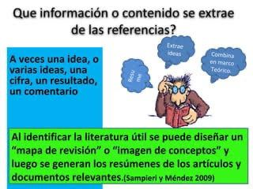
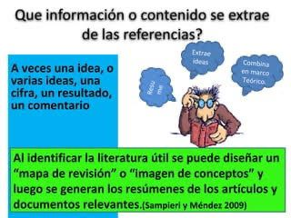

¿En qué consiste la revisión de la literatura?
La revisión de la literatura implica detectar, consultar y obtener la bibliografía (referencias) y otros materiales que sean útiles para los propósitos del estudio, de donde se tiene que extraer y recopilar la información relevante y necesaria para enmarcar nuestro problema de investigación.Revisión de la literatura
La revisión de la literatura implica detectar, consultar y obtener la bibliografía (referencias) y otros materiales que sean útiles para los propósitos del estudio, de donde se tiene que extraer y recopilar la información relevante y necesaria para enmarcar nuestro problema de investigación. Esta revisión debe ser selectiva, puesto que cada año en diversas partes del mundo se publican miles de artículos en revistas académicas, periódicos, libros y otras clases de materiales en las diferentes áreas del conocimiento. Si al revisar la literatura nos encontramos con que, en el área de interés, hay 5 000 posibles
referencias, es evidente que se requiere seleccionar sólo las más importantes y recientes, y que además estén directamente vinculadas con nuestro planteamiento del problema de investigación. En ocasiones,
revisamos referencias de estudios tanto cuantitativos como cualitativos, sin importar nuestro enfoque, porque se relacionan de manera estrecha con nuestros objetivos y preguntas.
A continuación comentamos los pasos que usualmente se siguen para revisar la literatura:
La revisión de la literatura puede iniciarse directamente con el acopio de las referencias o fuentes primarias,1 situación que ocurre cuando el investigador conoce su localización, se encuentra muy familiarizado con el campo de estudio y tiene acceso a ellas (puede utilizar material de bibliotecas, filmotecas, hemerotecas y bancos de información). Sin embargo, es poco común que suceda así, especialmente en lugares donde se cuenta con un número reducido de centros bibliográfi cos, pocas revistas académicas y libros.
.jpeg)
Por ello, es recomendable iniciar la revisión de la literatura consultando a uno o varios expertos en el tema (algún profesor, por ejemplo) y buscando —vía internet— fuentes primarias en centros o sistemas de información y bases de referencias y datos.Para ello, necesitamos elegir las “palabras claves”, “descriptores” o “términos de búsqueda”, los cuales deben ser distintivos del problema de estudio y se extraen de la idea o tema y del planteamiento del problema.Este último requiere de algunas lecturas preliminares para afi narse y completarse. Los expertos también nos pueden ayudar a seleccionar tales palabras. Si los términos son vagos y generales obtendremos una consulta con muchas referencias e información que no es pertinente para nuestro planteamiento. En este sentido, las bases de referencias funcionan como los “disparadores o motores de búsquedas” (Google, Yahoo, Altavista, etcétera). Por ejemplo, si hacemos una consulta con palabras como “escuela”, “educación”, “comunicación”, “empresas” o “personalidad” aparecerán miles de referencias y nos “perderemos en un mundo de información”.
Una vez que se han localizado físicamente las referencias (la literatura) de interés, se procede a consultarlas. El primer paso consiste en seleccionar las que serán de utilidad para nuestro marco teórico específico y desechar las que no nos sirvan. En ocasiones, una fuente primaria puede referirse a nuestro problema de investigación, pero no sernos útil porque no enfoca el tema desde el punto de vista que pretendemos establecer, se han realizado nuevos estudios que han encontrado explicaciones más satisfactorias, invalidado sus resultados o desaprobado sus conclusiones, se detectaron errores de método, o porque se realizaron en contextos completamente diferentes al de nuestra investigación, etc.
.jpeg)
Una vez que se han localizado físicamente las referencias (la literatura) de interés, se procede a consultarlas. El primer paso consiste en seleccionar las que serán de utilidad para nuestro marco teórico específico y desechar las que no nos sirvan. En ocasiones, una fuente primaria puede referirse a nuestro problema de investigación, pero no sernos útil porque no enfoca el tema desde el punto de vista que pretendemos establecer, se han realizado nuevos estudios que han encontrado explicaciones más satisfactorias, invalidado sus resultados o desaprobado sus conclusiones, se detectaron errores de método, o porque se realizaron en contextos completamente diferentes al de nuestra investigación, etc. En caso de que la detección de la literatura se realice mediante compilaciones o bancos de datos donde se incluye un breve resumen de cada referencia, se corre menos riesgo de elegir una fuente primaria inútil. En todas las áreas de conocimiento, las fuentes primarias más utilizadas para elaborar marcos teóricos son libros, artículos de revistas científicas y ponencias o trabajos presentados en congresos, simposios y eventos similares, entre otras razones, porque estas fuentes son las que sistematizan en mayor medida la información; generalmente profundizan más en el tema que desarrollan y son altamente especializadas. Además de que puede accederse a ellas vía internet.
.jpeg)
A veces se extrae una sola idea o varias ideas, otras, una cifra, un resultado o múltiples comentarios. Al identificar la literatura útil se puede diseñar un mapa de revisión, el cual es una “imagen de conceptos” de la agrupación propuesta respecto a las referencias del planteamiento y que ilustra cómo la indagación contribuirá al estudio del mismo.Cuando ya se haya puesto junta la literatura que se consideró para la elaboración del mapa de revisión, también se deben empezar a generar los resúmenes de los artículos y documentos más relevantes y la extracción de ideas, cifras y comentarios. Estos resúmenes e información se combinarán posteriormente en el marco teórico.

La literatura revisada puede revelar diferentes grados en el desarrollo del conocimiento:
A continuación comentamos los pasos que usualmente se siguen para revisar la literatura:
Inicio de la revisión de la literatura
La revisión de la literatura puede iniciarse directamente con el acopio de las referencias o fuentes primarias,1 situación que ocurre cuando el investigador conoce su localización, se encuentra muy familiarizado con el campo de estudio y tiene acceso a ellas (puede utilizar material de bibliotecas, filmotecas, hemerotecas y bancos de información). Sin embargo, es poco común que suceda así, especialmente en lugares donde se cuenta con un número reducido de centros bibliográfi cos, pocas revistas académicas y libros.
Por ello, es recomendable iniciar la revisión de la literatura consultando a uno o varios expertos en el tema (algún profesor, por ejemplo) y buscando —vía internet— fuentes primarias en centros o sistemas de información y bases de referencias y datos.Para ello, necesitamos elegir las “palabras claves”, “descriptores” o “términos de búsqueda”, los cuales deben ser distintivos del problema de estudio y se extraen de la idea o tema y del planteamiento del problema.Este último requiere de algunas lecturas preliminares para afi narse y completarse. Los expertos también nos pueden ayudar a seleccionar tales palabras. Si los términos son vagos y generales obtendremos una consulta con muchas referencias e información que no es pertinente para nuestro planteamiento. En este sentido, las bases de referencias funcionan como los “disparadores o motores de búsquedas” (Google, Yahoo, Altavista, etcétera). Por ejemplo, si hacemos una consulta con palabras como “escuela”, “educación”, “comunicación”, “empresas” o “personalidad” aparecerán miles de referencias y nos “perderemos en un mundo de información”.
Obtención (recuperación) de la literatura
Una vez que se han localizado físicamente las referencias (la literatura) de interés, se procede a consultarlas. El primer paso consiste en seleccionar las que serán de utilidad para nuestro marco teórico específico y desechar las que no nos sirvan. En ocasiones, una fuente primaria puede referirse a nuestro problema de investigación, pero no sernos útil porque no enfoca el tema desde el punto de vista que pretendemos establecer, se han realizado nuevos estudios que han encontrado explicaciones más satisfactorias, invalidado sus resultados o desaprobado sus conclusiones, se detectaron errores de método, o porque se realizaron en contextos completamente diferentes al de nuestra investigación, etc.
Consulta de la literatura
Una vez que se han localizado físicamente las referencias (la literatura) de interés, se procede a consultarlas. El primer paso consiste en seleccionar las que serán de utilidad para nuestro marco teórico específico y desechar las que no nos sirvan. En ocasiones, una fuente primaria puede referirse a nuestro problema de investigación, pero no sernos útil porque no enfoca el tema desde el punto de vista que pretendemos establecer, se han realizado nuevos estudios que han encontrado explicaciones más satisfactorias, invalidado sus resultados o desaprobado sus conclusiones, se detectaron errores de método, o porque se realizaron en contextos completamente diferentes al de nuestra investigación, etc. En caso de que la detección de la literatura se realice mediante compilaciones o bancos de datos donde se incluye un breve resumen de cada referencia, se corre menos riesgo de elegir una fuente primaria inútil. En todas las áreas de conocimiento, las fuentes primarias más utilizadas para elaborar marcos teóricos son libros, artículos de revistas científicas y ponencias o trabajos presentados en congresos, simposios y eventos similares, entre otras razones, porque estas fuentes son las que sistematizan en mayor medida la información; generalmente profundizan más en el tema que desarrollan y son altamente especializadas. Además de que puede accederse a ellas vía internet.
¿Qué información o contenido se extrae de las referencias?
A veces se extrae una sola idea o varias ideas, otras, una cifra, un resultado o múltiples comentarios. Al identificar la literatura útil se puede diseñar un mapa de revisión, el cual es una “imagen de conceptos” de la agrupación propuesta respecto a las referencias del planteamiento y que ilustra cómo la indagación contribuirá al estudio del mismo.Cuando ya se haya puesto junta la literatura que se consideró para la elaboración del mapa de revisión, también se deben empezar a generar los resúmenes de los artículos y documentos más relevantes y la extracción de ideas, cifras y comentarios. Estos resúmenes e información se combinarán posteriormente en el marco teórico.

¿Qué nos puede revelar la revisión de la literatura?
Uno de los propósitos de la revisión de la literatura es analizar y discernir si la teoría existente y la investigación anterior sugieren una respuesta (aunque sea parcial) a la pregunta o las preguntas de investigación; o bien, provee una dirección a seguir dentro del planteamiento de nuestro estudio.La literatura revisada puede revelar diferentes grados en el desarrollo del conocimiento:
- Que existe una teoría completamente desarrollada, con abundante evidencia empírica y que se aplica a nuestro problema de investigación.
- Que hay varias teorías que se aplican a nuestro problema de investigación.
- Que hay “piezas y trozos” de teoría con cierto respaldo empírico, que sugieren variables potencialmente importantes y que se aplican a nuestro problema de investigación (pueden ser generalizaciones empíricas e hipótesis con apoyo de algunos estudios).
- Que hay descubrimientos interesantes, pero parciales, sin llegar a ajustarse a una teoría.
- Que sólo existen guías aún no estudiadas e ideas vagamente relacionadas con el problema de investigación.